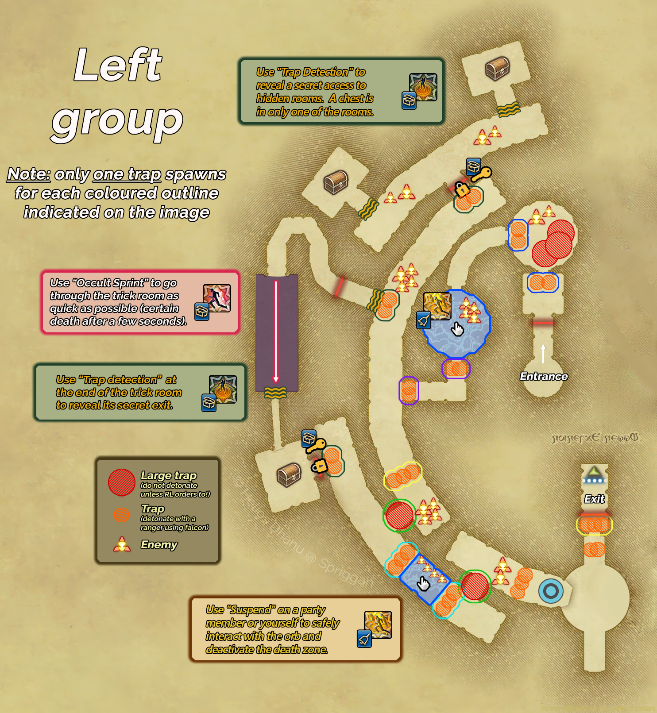
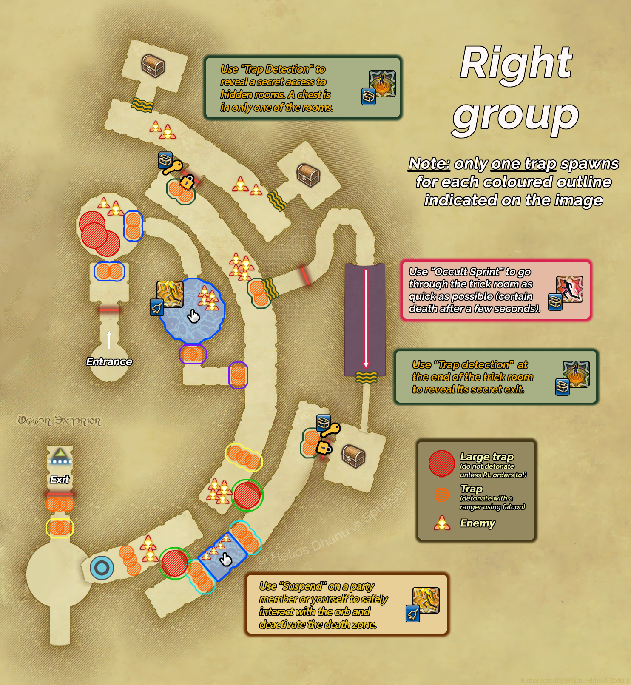

Central Passages
The hallway section between Demon Tablet and Dead Stars. Also referred to as “Hallways.”
Overview
After defeating Demon Tablet, the raid splits into two groups: letter parties (A, B, C) take the left passage, number parties (D/1, E/2, F/3) take the right. Each side navigates a mirrored layout of hallways filled with hidden explosive traps and enemies with unique mechanics, before rejoining at the Dead Stars arena.
Traps remain invisible on the overworld until revealed by a Phantom Thief using Trap Detection. They spawn in colour-coded groups; only one trap per colour group will actually spawn, the other spots remain empty. Even so, always proceed with care; knowledge of the trap pattern is optional, and it is safer to spam Trap Detection than to assume a spot is clear.
Explosive Traps


Phantom Job Responsibilities
- Use Occult Slowga on all enemies, especially the Manticore.
- Use Occult Dispel on the Scarab immediately when it gains Evasion Up (Rhino Guard).
- Use Shock Cannon on all enemies.
- On blue lightning floors, use Suspend to float above the floor and walk to the buttons in the middle to activate them.
- When instructed, use Occult Falcon to disarm traps; clip the trap with only the outer edge of the AoE.
- When disarming a Mega Trap, stand at maximum range and ensure everyone is well behind you first.
- You may be assigned a marker (e.g. Bind 1) at the start of hallways for visibility.
- Use Trap Detection to reveal traps. Take your time and run ahead of the group.
- In the Thief Room, use Occult Sprint to dash through and press Trap Detection at the very end to open the hidden door.
- You may be assigned a marker (e.g. Ignore 1) at the start of hallways for visibility.